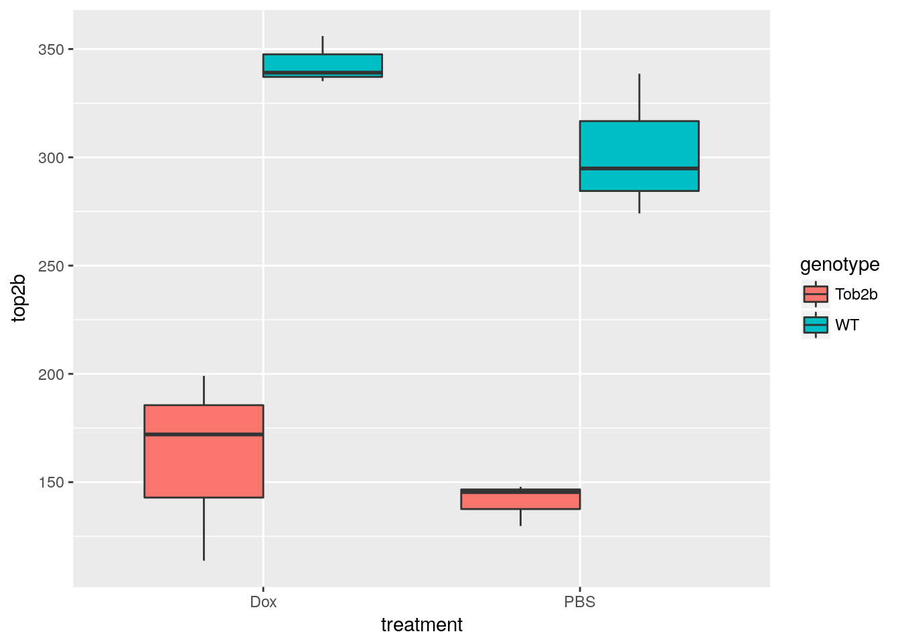
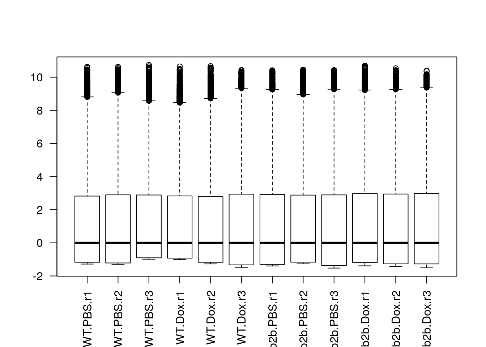
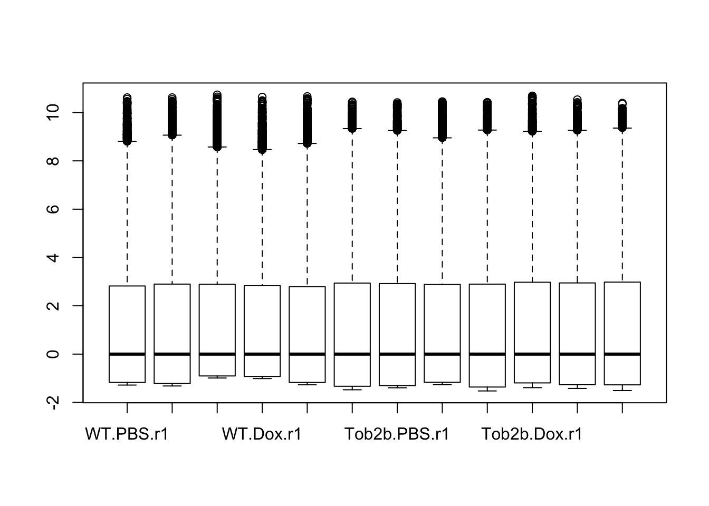
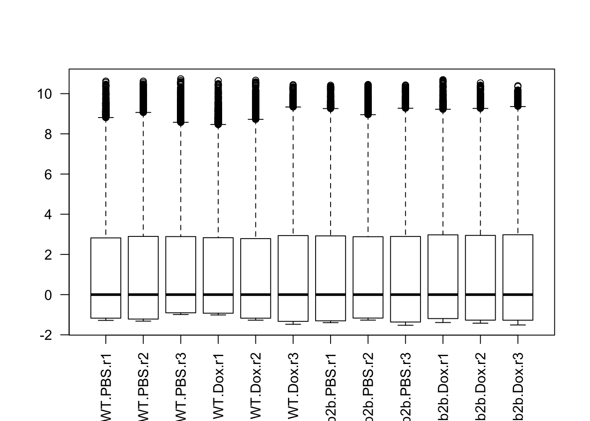
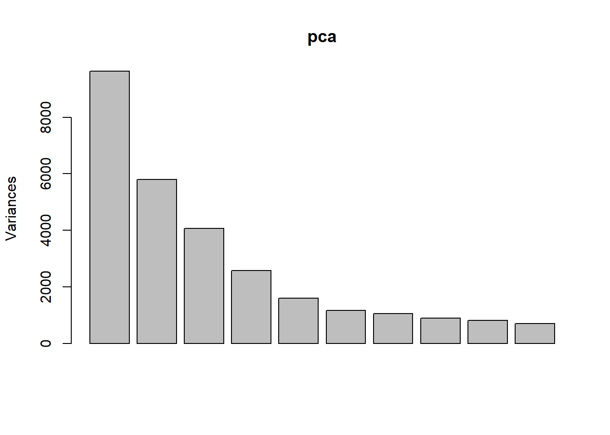
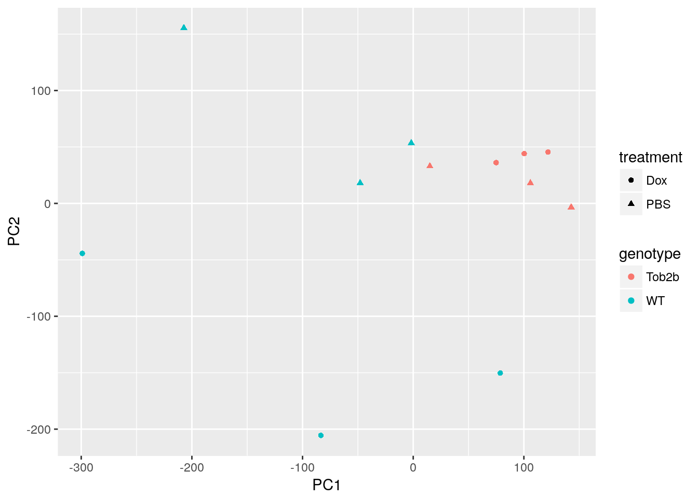
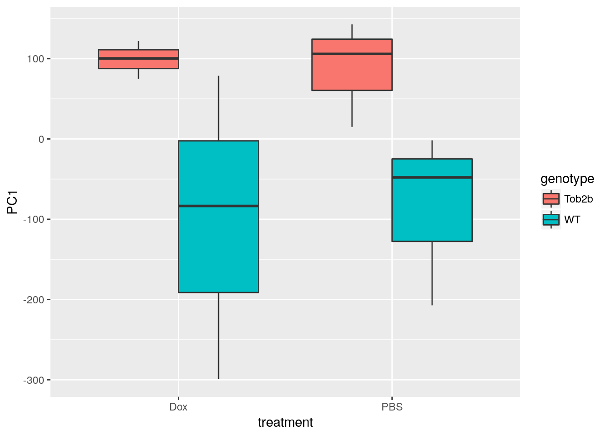
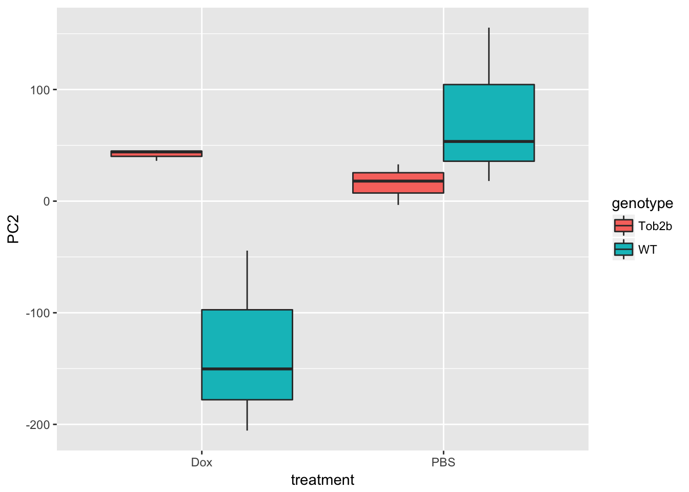
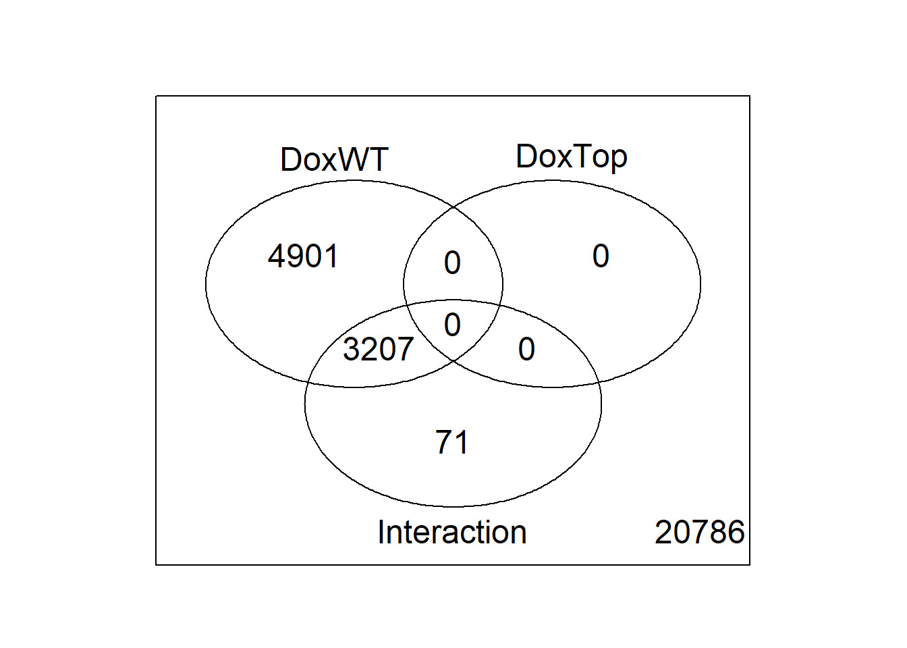

Last updated: 2018-05-23
workflowr checks: (Click a bullet for more information) ✖ R Markdown file: uncommitted changes
The R Markdown file has unstaged changes. To know which version of the R Markdown file created these results, you’ll want to first commit it to the Git repo. If you’re still working on the analysis, you can ignore this warning. When you’re finished, you can run wflow_publish to commit the R Markdown file and build the HTML.
✔ Environment: empty
Great job! The global environment was empty. Objects defined in the global environment can affect the analysis in your R Markdown file in unknown ways. For reproduciblity it’s best to always run the code in an empty environment.
✔ Seed:
set.seed(12345)
The command set.seed(12345) was run prior to running the code in the R Markdown file. Setting a seed ensures that any results that rely on randomness, e.g. subsampling or permutations, are reproducible.
✔ Session information: recorded
Great job! Recording the operating system, R version, and package versions is critical for reproducibility.
✔ Repository version: cc6353a
wflow_publish or wflow_git_commit). workflowr only checks the R Markdown file, but you know if there are other scripts or data files that it depends on. Below is the status of the Git repository when the results were generated:
Ignored files:
Ignored: .DS_Store
Ignored: .Rhistory
Ignored: .Rproj.user/
Ignored: figure/.DS_Store
Ignored: figure/ch02/.DS_Store
Untracked files:
Untracked: _workflowr.yml
Unstaged changes:
Modified: analysis/_site.yml
Modified: analysis/about.Rmd
Modified: analysis/ch01.Rmd
Modified: analysis/ch02.Rmd
Modified: analysis/ch03.Rmd
Modified: analysis/ch04.Rmd
Deleted: analysis/chunks.R
Modified: analysis/index.Rmd
Modified: analysis/license.Rmd
| File | Version | Author | Date | Message |
|---|---|---|---|---|
| html | 67f13a4 | John Blischak | 2018-03-09 | Build site. |
| Rmd | a2fc9a7 | John Blischak | 2018-03-09 | Minor edits to ch04 solutions |
| html | b2dc653 | John Blischak | 2018-01-25 | Build site. |
| Rmd | dc82382 | John Blischak | 2018-01-25 | Minor updates to Ch 04 analysis. |
| html | 7f4d46b | John Blischak | 2018-01-11 | Build site. |
| Rmd | 5db0175 | John Blischak | 2018-01-11 | Organize Ch 04 |
Analayze microarray data from Zhang et al., 2012, which measured gene expression in hearts from wild type and Top2b null mice treated with doxorubicin or a control.
library("Biobase")
library("ggplot2")
library("limma")
eset <- readRDS("../data/ch04.rds")Describe the scientific question, the experimental design, and the data collected for the 2x2 factorial study.
Create a boxplot of the expression level of Top2b to confirm the null mice have lower levels of Top2b expression. Use pData and table to access and explore the phenotype measurements to be used in the plot.
head(fData(eset)) probe chr start end symbol ensembl
1 A_55_P2051983 chr18 62753954 62753895 Spink7 ENSMUST00000076194
2 A_52_P169082 chr11 76031955 76032014 Dbil5
3 A_30_P01028193 chr14 47982421 47982480
4 A_52_P237997 chr3 156834624 156834683 Negr1
5 A_51_P414243 chr9 121890800 121890741 C85492 ENSMUST00000084743
6 A_55_P2136348 chr9 120003293 120003352 Ccr8 ENSMUST00000048777
refseq entrez name
1 NM_001001803 408198 serine peptidase inhibitor, Kazal type 7 (putative)
2 NM_021294 13168 diazepam binding inhibitor-like 5
3 NA
4 NM_177274 320840 neuronal growth regulator 1
5 NM_153540 215494 expressed sequence C85492
6 NM_007720 12776 chemokine (C-C motif) receptor 8top2b <- exprs(eset)[fData(eset)$symbol == "Top2b", ]
head(pData(eset)) title genotype treatment
WT.PBS.r1 WT Cardiomyocytes 16hr after PBS rep1 WT PBS
WT.PBS.r2 WT Cardiomyocytes 16hr after PBS rep2 WT PBS
WT.PBS.r3 WT Cardiomyocytes 16hr after PBS rep3 WT PBS
WT.Dox.r1 WT Cardiomyocytes 16hr after doxorubicin rep1 WT Dox
WT.Dox.r2 WT Cardiomyocytes 16hr after doxorubicin rep2 WT Dox
WT.Dox.r3 WT Cardiomyocytes 16hr after doxorubicin rep3 WT Dox
rep
WT.PBS.r1 r1
WT.PBS.r2 r2
WT.PBS.r3 r3
WT.Dox.r1 r1
WT.Dox.r2 r2
WT.Dox.r3 r3d <- data.frame(pData(eset), top2b)
ggplot(d, aes(x = treatment, y = top2b, fill = genotype)) +
geom_boxplot()
Use boxplots as an alternative to density plots for checking the distribution of gene expression levels. Note pro (easier to see which sample belongs to each distribution) and con (hides any multimodality).
boxplot(exprs(eset))
| Version | Author | Date |
|---|---|---|
| 67f13a4 | John Blischak | 2018-03-09 |
| b2dc653 | John Blischak | 2018-01-25 |
| 7f4d46b | John Blischak | 2018-01-11 |
boxplot(log(exprs(eset)))
| Version | Author | Date |
|---|---|---|
| 67f13a4 | John Blischak | 2018-03-09 |
boxplot(log(exprs(eset)), las = 2)
| Version | Author | Date |
|---|---|---|
| 67f13a4 | John Blischak | 2018-03-09 |
Use prcomp to calculate PCs and plot PC2 vs. PC1 to confirm that the samples are separated by genotype and treatment. Note that Top2b mice all cluster with untreated WT samples since they are resistant to the treatment.
pca <- prcomp(t(exprs(eset)), scale. = TRUE)
plot(pca)
| Version | Author | Date |
|---|---|---|
| 67f13a4 | John Blischak | 2018-03-09 |
| b2dc653 | John Blischak | 2018-01-25 |
| 7f4d46b | John Blischak | 2018-01-11 |
d <- data.frame(pData(eset), pca$x)
ggplot(d, aes(x = PC1, y = PC2, color = genotype, shape = treatment)) +
geom_point()
| Version | Author | Date |
|---|---|---|
| 67f13a4 | John Blischak | 2018-03-09 |
| b2dc653 | John Blischak | 2018-01-25 |
| 7f4d46b | John Blischak | 2018-01-11 |
ggplot(d, aes(x = treatment, y = PC1, fill = genotype)) +
geom_boxplot()
| Version | Author | Date |
|---|---|---|
| 67f13a4 | John Blischak | 2018-03-09 |
| b2dc653 | John Blischak | 2018-01-25 |
| 7f4d46b | John Blischak | 2018-01-11 |
ggplot(d, aes(x = treatment, y = PC2, fill = genotype)) +
geom_boxplot()
Discuss how to construct a design and contrasts matrix for a 2x2 factorial design. Note how to create a combined factor and how to write the contrast for the interaction term.
Create a combined factor using paste. Use model.matrix to create a linear model with 4 binary variables (group-means parametrization).
f <- paste(pData(eset)$genotype, pData(eset)$treatment, sep = ".")
design <- model.matrix(~0 + f)
colnames(design) <- sub("f", "", colnames(design))
colSums(design)Tob2b.Dox Tob2b.PBS WT.Dox WT.PBS
3 3 3 3 Use limma::makeContrasts to test the main effects and the interaction between genotype and treatment.
cont_mat <- makeContrasts(DoxWT = WT.Dox - WT.PBS,
DoxTop = Tob2b.Dox - Tob2b.PBS,
Interaction = (Tob2b.Dox - Tob2b.PBS) -
(WT.Dox - WT.PBS),
levels = design)
cont_mat Contrasts
Levels DoxWT DoxTop Interaction
Tob2b.Dox 0 1 1
Tob2b.PBS 0 -1 -1
WT.Dox 1 0 -1
WT.PBS -1 0 1Use limma::lmFit, limma::contrasts.fit, limma::eBayes, and limma::decideTests to fit and test the model. Use limma::vennDiagram to visualize overlap of differentially expressed genes.
fit <- lmFit(eset, design)
head(fit$coefficients) Tob2b.Dox Tob2b.PBS WT.Dox WT.PBS
1 0.2975107 0.2945810 0.3539563 0.3620450
2 4.2250150 4.6055087 3.6762460 3.1691957
3 0.3001070 0.3196167 0.6157077 0.3739970
4 0.3012637 0.2955227 0.3532647 0.3616193
5 264.7589623 245.4630817 294.2404533 274.2917363
6 0.3032463 0.2958423 0.3525713 0.3611247fit2 <- contrasts.fit(fit, contrasts = cont_mat)
head(fit2$coefficients) Contrasts
DoxWT DoxTop Interaction
1 -0.008088667 0.002929667 0.01101833
2 0.507050333 -0.380493667 -0.88754400
3 0.241710667 -0.019509667 -0.26122033
4 -0.008354667 0.005741000 0.01409567
5 19.948717000 19.295880667 -0.65283633
6 -0.008553333 0.007404000 0.01595733fit2 <- eBayes(fit2)
results <- decideTests(fit2)
summary(results) DoxWT DoxTop Interaction
-1 2311 0 320
0 55050 59304 58071
1 1944 1 914vennDiagram(results)
Describe common approaches for testing for enrichment of gene sets. Discuss Gene Onotlogy categories and KEGG pathways. Introduce Fisher’s Exact Test. Stress the importance of choosing the correct background set of genes and caution against over-interpretation (especially for directional effect). Mention at the end that there are more sophisticated algorithms such as limma::camera, limma::roast, and goseq::goseq.
Use limma::kegga and limma::topKEGG to test for enrichment of differentially expressed genes in KEGG pathways.
entrez <- fit2$genes$entrez
enrich_kegg_wt <- kegga(fit2, coef = "DoxWT",
geneid = entrez, species = "Mm")
topKEGG(enrich_kegg_wt) Pathway N
path:mmu05322 Systemic lupus erythematosus 110
path:mmu05034 Alcoholism 165
path:mmu03008 Ribosome biogenesis in eukaryotes 77
path:mmu05203 Viral carcinogenesis 212
path:mmu05412 Arrhythmogenic right ventricular cardiomyopathy (ARVC) 72
path:mmu04137 Mitophagy - animal 63
path:mmu04261 Adrenergic signaling in cardiomyocytes 145
path:mmu04022 cGMP-PKG signaling pathway 166
path:mmu05414 Dilated cardiomyopathy (DCM) 88
path:mmu04217 Necroptosis 158
path:mmu04971 Gastric acid secretion 74
path:mmu04144 Endocytosis 262
path:mmu05410 Hypertrophic cardiomyopathy (HCM) 83
path:mmu05202 Transcriptional misregulation in cancer 174
path:mmu04012 ErbB signaling pathway 84
path:mmu03040 Spliceosome 129
path:mmu03013 RNA transport 166
path:mmu04066 HIF-1 signaling pathway 103
path:mmu04115 p53 signaling pathway 67
path:mmu04919 Thyroid hormone signaling pathway 115
Up Down P.Up P.Down
path:mmu05322 25 1 1.275512e-10 9.997136e-01
path:mmu05034 29 12 2.754611e-09 5.089928e-01
path:mmu03008 19 2 5.184560e-09 9.767149e-01
path:mmu05203 33 11 5.356776e-09 8.957936e-01
path:mmu05412 0 20 1.000000e+00 7.142217e-08
path:mmu04137 15 7 3.628333e-07 1.572432e-01
path:mmu04261 5 27 8.642262e-01 2.843226e-06
path:mmu04022 4 29 9.717775e-01 4.646843e-06
path:mmu05414 0 19 1.000000e+00 9.524657e-06
path:mmu04217 21 14 4.219986e-05 2.306917e-01
path:mmu04971 2 16 8.948275e-01 4.706902e-05
path:mmu04144 29 20 5.284433e-05 4.005582e-01
path:mmu05410 0 17 1.000000e+00 5.716438e-05
path:mmu05202 22 10 6.030451e-05 7.996927e-01
path:mmu04012 5 17 4.206570e-01 6.704920e-05
path:mmu03040 18 11 7.835780e-05 3.079244e-01
path:mmu03013 21 8 8.782808e-05 9.111483e-01
path:mmu04066 8 19 1.491963e-01 9.619306e-05
path:mmu04115 12 2 1.127063e-04 9.565283e-01
path:mmu04919 7 20 3.627170e-01 1.484823e-04enrich_kegg_inter <- kegga(fit2, coef = "Interaction",
geneid = entrez, species = "Mm")
topKEGG(enrich_kegg_inter) Pathway N
path:mmu03008 Ribosome biogenesis in eukaryotes 77
path:mmu05322 Systemic lupus erythematosus 110
path:mmu05034 Alcoholism 165
path:mmu05203 Viral carcinogenesis 212
path:mmu04919 Thyroid hormone signaling pathway 115
path:mmu00230 Purine metabolism 175
path:mmu05414 Dilated cardiomyopathy (DCM) 88
path:mmu05412 Arrhythmogenic right ventricular cardiomyopathy (ARVC) 72
path:mmu05212 Pancreatic cancer 75
path:mmu05220 Chronic myeloid leukemia 76
path:mmu05205 Proteoglycans in cancer 199
path:mmu04930 Type II diabetes mellitus 48
path:mmu04211 Longevity regulating pathway 90
path:mmu04261 Adrenergic signaling in cardiomyocytes 145
path:mmu05222 Small cell lung cancer 92
path:mmu04210 Apoptosis 134
path:mmu05213 Endometrial cancer 58
path:mmu04933 AGE-RAGE signaling pathway in diabetic complications 100
path:mmu05217 Basal cell carcinoma 63
path:mmu01522 Endocrine resistance 93
Up Down P.Up P.Down
path:mmu03008 0 10 1.0000000000 1.007965e-08
path:mmu05322 0 10 1.0000000000 3.200229e-07
path:mmu05034 5 11 0.5239903502 1.823095e-06
path:mmu05203 3 12 0.9487940322 3.363101e-06
path:mmu04919 11 2 0.0004774097 3.663623e-01
path:mmu00230 14 3 0.0005362122 3.077808e-01
path:mmu05414 9 0 0.0009610474 1.000000e+00
path:mmu05412 8 0 0.0010648869 1.000000e+00
path:mmu05212 3 5 0.3710324131 1.411325e-03
path:mmu05220 4 5 0.1779928540 1.497676e-03
path:mmu05205 14 5 0.0018741551 7.000390e-02
path:mmu04930 6 1 0.0024581255 4.159308e-01
path:mmu04211 3 5 0.4867180093 3.156205e-03
path:mmu04261 11 1 0.0031788883 8.049817e-01
path:mmu05222 1 5 0.9342324019 3.471129e-03
path:mmu04210 6 6 0.1928783824 3.643308e-03
path:mmu05213 3 4 0.2361147774 3.816237e-03
path:mmu04933 6 5 0.0698159306 4.959486e-03
path:mmu05217 4 4 0.1092379866 5.137883e-03
path:mmu01522 8 3 0.0053948301 8.431867e-02Use limma::goana and limma::topGO to test for enrichment of differentially expressed genes in Gene Ontology categories.
enrich_go_wt <- goana(fit2, coef = "DoxWT",
geneid = entrez, species = "Mm")
topGO(enrich_go_wt, ontology = "BP") Term Ont N Up
GO:0090304 nucleic acid metabolic process BP 4256 411
GO:0016070 RNA metabolic process BP 3810 373
GO:0044260 cellular macromolecule metabolic process BP 7072 577
GO:0006139 nucleobase-containing compound metabolic process BP 4786 426
GO:0034641 cellular nitrogen compound metabolic process BP 5404 460
GO:0046483 heterocycle metabolic process BP 4882 427
GO:0043170 macromolecule metabolic process BP 7739 598
GO:0006725 cellular aromatic compound metabolic process BP 4945 429
GO:0010467 gene expression BP 4539 403
GO:0006807 nitrogen compound metabolic process BP 5725 474
GO:1901360 organic cyclic compound metabolic process BP 5109 432
GO:0006396 RNA processing BP 742 113
GO:0044237 cellular metabolic process BP 8723 633
GO:0022613 ribonucleoprotein complex biogenesis BP 366 71
GO:0044238 primary metabolic process BP 8743 626
GO:0034645 cellular macromolecule biosynthetic process BP 4075 344
GO:0071704 organic substance metabolic process BP 9212 645
GO:0051252 regulation of RNA metabolic process BP 3121 280
GO:0032774 RNA biosynthetic process BP 3092 278
GO:0097659 nucleic acid-templated transcription BP 3078 277
Down P.Up P.Down
GO:0090304 331 1.504047e-37 8.626750e-03
GO:0016070 306 1.468665e-34 1.970377e-03
GO:0044260 589 2.147486e-34 9.800194e-09
GO:0006139 393 1.214879e-30 5.157099e-05
GO:0034641 453 4.594157e-29 8.906329e-07
GO:0046483 406 5.642472e-29 1.051022e-05
GO:0043170 630 7.077190e-29 8.377610e-08
GO:0006725 409 2.423666e-28 1.647989e-05
GO:0010467 378 2.692286e-28 2.196723e-05
GO:0006807 472 2.722933e-27 3.295379e-06
GO:1901360 420 4.358967e-26 2.178695e-05
GO:0006396 65 7.616058e-24 3.022888e-02
GO:0044237 731 3.723539e-23 1.744190e-12
GO:0022613 26 3.096042e-21 4.775639e-01
GO:0044238 725 4.779276e-21 2.905773e-11
GO:0034645 334 1.552262e-19 2.752467e-04
GO:0071704 765 2.262336e-19 1.992779e-12
GO:0051252 254 4.844028e-19 2.593424e-03
GO:0032774 244 5.051745e-19 1.343578e-02
GO:0097659 242 5.273962e-19 1.615435e-02enrich_go_inter <- goana(fit2, coef = "Interaction",
geneid = entrez, species = "Mm")
topGO(enrich_go_inter, ontology = "BP") Term Ont N Up Down
GO:0034470 ncRNA processing BP 300 10 20
GO:0042254 ribosome biogenesis BP 249 4 18
GO:0006334 nucleosome assembly BP 90 1 12
GO:0006396 RNA processing BP 742 28 30
GO:0034728 nucleosome organization BP 114 2 13
GO:0034660 ncRNA metabolic process BP 402 12 22
GO:0071103 DNA conformation change BP 174 3 15
GO:0031497 chromatin assembly BP 106 1 12
GO:0022613 ribonucleoprotein complex biogenesis BP 366 11 20
GO:0016043 cellular component organization BP 5401 230 67
GO:0006364 rRNA processing BP 169 3 14
GO:0060047 heart contraction BP 187 24 2
GO:0003015 heart process BP 190 24 2
GO:0016072 rRNA metabolic process BP 174 3 14
GO:0090304 nucleic acid metabolic process BP 4256 143 81
GO:0061337 cardiac conduction BP 45 12 0
GO:0086003 cardiac muscle cell contraction BP 46 12 0
GO:0006333 chromatin assembly or disassembly BP 127 2 12
GO:0071840 cellular component organization or biogenesis BP 5552 232 78
GO:0030490 maturation of SSU-rRNA BP 47 0 8
P.Up P.Down
GO:0034470 4.276026e-01 4.956310e-11
GO:0042254 9.468523e-01 1.280676e-10
GO:0006334 9.380859e-01 1.522812e-10
GO:0006396 1.404747e-01 1.829287e-10
GO:0034728 8.649106e-01 1.912084e-10
GO:0034660 5.655911e-01 2.325658e-10
GO:0071103 9.018931e-01 4.099080e-10
GO:0031497 9.622922e-01 1.058346e-09
GO:0022613 5.571261e-01 1.637937e-09
GO:0016043 2.509447e-09 5.204254e-02
GO:0006364 8.908148e-01 2.688905e-09
GO:0060047 2.742485e-09 5.797084e-01
GO:0003015 3.784836e-09 5.883840e-01
GO:0016072 9.018931e-01 3.928343e-09
GO:0090304 9.322263e-02 4.457810e-09
GO:0061337 6.378454e-09 1.000000e+00
GO:0086003 8.393293e-09 1.000000e+00
GO:0006333 9.016483e-01 8.547694e-09
GO:0071840 1.190080e-08 1.306441e-03
GO:0030490 1.000000e+00 2.600262e-08sessionInfo()R version 3.3.3 (2017-03-06)
Platform: x86_64-apple-darwin13.4.0 (64-bit)
Running under: OS X Yosemite 10.10.5
locale:
[1] en_US.UTF-8/en_US.UTF-8/en_US.UTF-8/C/en_US.UTF-8/en_US.UTF-8
attached base packages:
[1] parallel stats graphics grDevices utils datasets methods
[8] base
other attached packages:
[1] limma_3.30.13 ggplot2_2.2.1 Biobase_2.34.0
[4] BiocGenerics_0.20.0
loaded via a namespace (and not attached):
[1] Rcpp_0.12.14 pillar_1.2.2 git2r_0.21.0
[4] plyr_1.8.4 workflowr_1.0.1 R.methodsS3_1.7.1
[7] R.utils_2.6.0 tools_3.3.3 digest_0.6.13
[10] bit_1.1-12 memoise_1.1.0 evaluate_0.10.1
[13] RSQLite_2.0 tibble_1.4.2 gtable_0.2.0
[16] pkgconfig_2.0.1 rlang_0.2.0 DBI_0.8
[19] yaml_2.1.16 org.Mm.eg.db_3.4.0 stringr_1.3.0
[22] knitr_1.20 IRanges_2.8.2 S4Vectors_0.12.2
[25] stats4_3.3.3 rprojroot_1.3-2 bit64_0.9-7
[28] grid_3.3.3 AnnotationDbi_1.36.2 rmarkdown_1.9.12
[31] GO.db_3.4.0 blob_1.1.1 magrittr_1.5
[34] whisker_0.3-2 backports_1.1.2 scales_0.5.0
[37] htmltools_0.3.6 colorspace_1.3-2 labeling_0.3
[40] stringi_1.1.7 lazyeval_0.2.1 munsell_0.4.3
[43] R.oo_1.22.0
This reproducible R Markdown analysis was created with workflowr 1.0.1